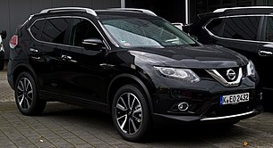

GT-R (R34)
Роки виробництва: 1999-2002
Тип кузова: Купе
Колісна база: 4*4
Трансмісія: 6-ст. Механічна GETRAG
Об'єм бака: 65 л.

Silvia S-15
Роки виробництва: 1999—2002
Тип кузова: 2-дв. купе, 2-дв. кабріолет
Колісна база: 4*4
Об'єм бака: 65 л.

X-Trail T32
Роки виробництва: 2013 - теперішній час
Тип кузова: 5-дв. SUV (5-міс.)
Об'єм бака: 60 л